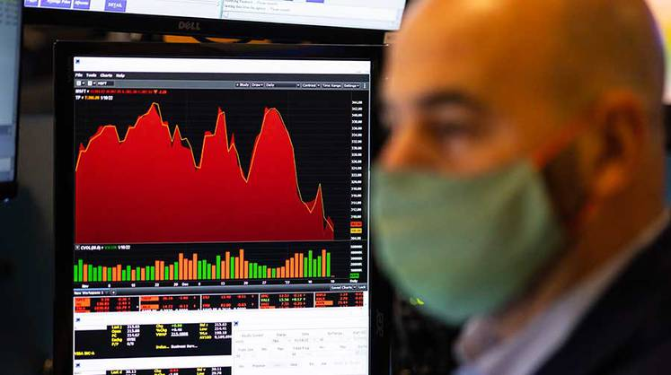

ЛЕНТА НОВОСТЕЙ
Рынки может ждать тяжелый год
24 января 2022, 00:00 Эксперт №4 Можно только посочувствовать инвесторам, которые в этом январе решили поторговать с плечом и заняли деньги у брокера. Многие из них были вынесены из рынка маржин-коллами 17 и 18 января —при этом не исключено, что некоторые инвесторы потеряли вообще все собственные средства (зависит от размера плеча). О том, что российские инвесторы склонны именно к рискованным операциям на бирже, ЦБ предупреждает давно: наши граждане предпочитают открывать обычные брокерские счета, а не нацеленные на долгий срок ИИС (индивидуальные инвестиционные счета). Это также подтверждает и огромный интерес к хайповым иностранным акциям вроде Tesla. Впрочем, две трети брокерских счетов в стране все равно пустые, а размер зафондированного брокерского счета — почти 1,3 млн рублей. Биржа в России все еще способ для богатых пощекотать нервы, нежели прибежище массового инвестора.
У разогнанного поклонниками новой экономики и читателями Reddit американского рынка акций свои проблемы. Инфляция в США достигла 7%, ФРС сворачивает количественное смягчение и повышает ставку, и это грозит разнообразными проблемами сразу всем — и инвесторам в облигации (которые дают больше 5% отрицательной реальной доходности при таком росте цен), и инвесторам в акции техов (которые уже не выглядят такими манящими), и даже инвесторам в акции стоимости, то есть в бизнесы, работающие «на земле», с конечным потребителем. Американский потребитель все еще покупает меньше, чем до пандемии, а рост ставок может ввергнуть его в депрессию.
Можно только посочувствовать инвесторам, которые в этом январе решили поторговать с плечом и заняли деньги у брокера. Многие из них были вынесены из рынка маржин-коллами 17 и 18 января —при этом не исключено, что некоторые инвесторы потеряли вообще все собственные средства (зависит от размера плеча). О том, что российские инвесторы склонны именно к рискованным операциям на бирже, ЦБ предупреждает давно: наши граждане предпочитают открывать обычные брокерские счета, а не нацеленные на долгий срок ИИС (индивидуальные инвестиционные счета). Это также подтверждает и огромный интерес к хайповым иностранным акциям вроде Tesla. Впрочем, две трети брокерских счетов в стране все равно пустые, а размер зафондированного брокерского счета — почти 1,3 млн рублей. Биржа в России все еще способ для богатых пощекотать нервы, нежели прибежище массового инвестора.